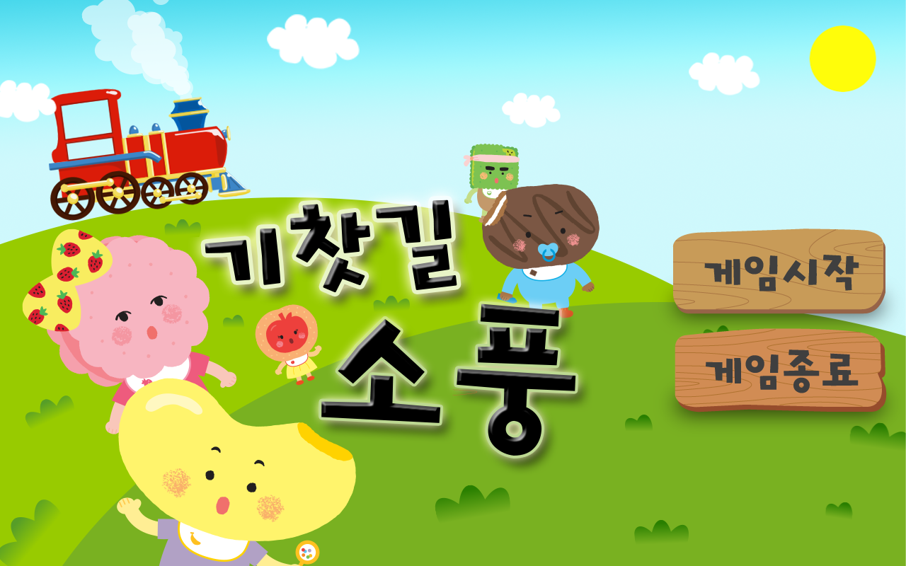
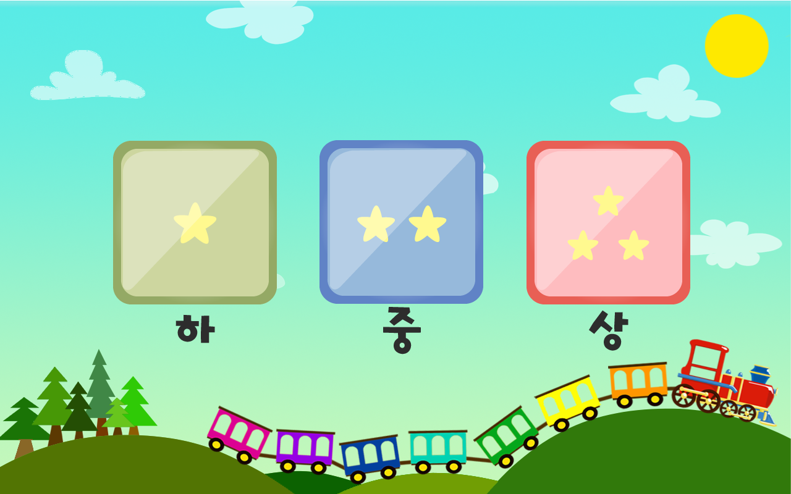
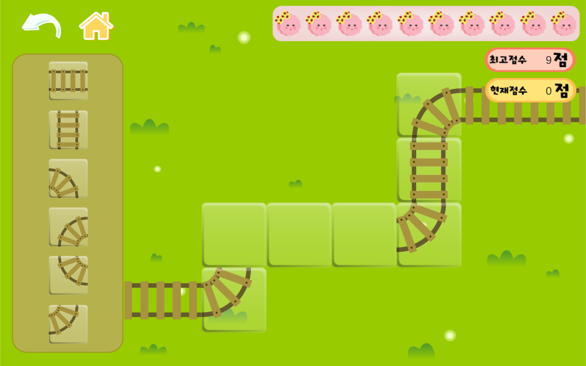

소개
중간중간 비어있는 기찻길을 맞추면서 어린이들의 공간지각력을 높일 수 있는 퍼즐형 게임입니다. 쿠키쿠 친구들이 기차를 타고 소풍을 가는 도중 기찻길이 끊깁니다. 쿠키쿠 친구들이 무사히 목적지까지 도착할 수 있게 아이들이 끊긴 기찻길을 맞추어 도와주어야 합니다.
Digital Game Services
Concept Development
Creative Direction
UX / Design
Animation
Development
효과
비어있는 기찻길에 퍼즐을 맞추면서 길이 어떻게 이어지는지 인식하게 만들어 공간지각력을 높이는데 도움을 줄 수 있습니다.
문제해결 능력을 스스로 키울 수 있습니다.
아이들이 좋아하는 쿠키쿠 캐릭터에 대한 공감능력을 바탕으로 게임에 대한 집중력을 증진시켜, 학습에 대한 흥미를 높이는 효과를 기대할 수 있습니다.

캐릭터 선택
아이들은 다양한 캐릭터를 선택할 수 있고, 캐릭터에 따라 배경, 이미지가 달라집니다.
게임의 기차 색깔이 캐릭터마다 다르며 라이프의 이미지도 그에 영향을 받습니다.
컨텐츠에 빨리 지루함을 느끼는 어린 아이들을 위해 질리지 않도록 좀더 다양한 선택과 색감을 강조하였습니다.
난이도선택
주로 플레이하는 아이들의 나이는 대략 1-3세로 빠른 습득력을 고려하여 다양한 난이도 선택이 가능할 수 있도록 하였습니다.
난이도(하) 는 빈칸수가 1개이며, 게임의 방식에 대한 기초적인 정보만 습득할 수 있도록 설정했습니다.
그 다음 난이도(중) 과 난이도(상) 은 라이프를 10개로 고정하고 난이도를 높여 도전 의식 및 좀 더 복잡하고 단계적인 학습이 가능토록 했습니다.

조작방법
입력 키를 드래그 앤 드롭만으로 조작방법을 간결하게 만들었습니다.
아직 글이 익숙치 않은 아이들에게 원활한 이해를 위해 음성 나레이션을 삽입하였습니다.
아이들에게 손가락 모양의 아이콘으로 조작해야 할 부분을 가리키는 이미지를 추가하여 조작의 어려움을 해소하려고 하였습니다.
아이들의 특성상 오조작의 우려가 있어 홈 또는 뒤로가기 버튼을 터치할 시 다시 한번 되 묻는 창이 뜨도록 설정하였습니다.

애니메이션
어린 아이들이 스토리를 잘 이해할 수 있고 게임에 관심을 가질 수 있도록 오프닝 애니메이션을 만들어 넣었습니다.
특정 점수를 넘었을 시 보상으로써 엔딩을 볼 수 있도록 특별 애니메이션도 숨겨놓았습니다.